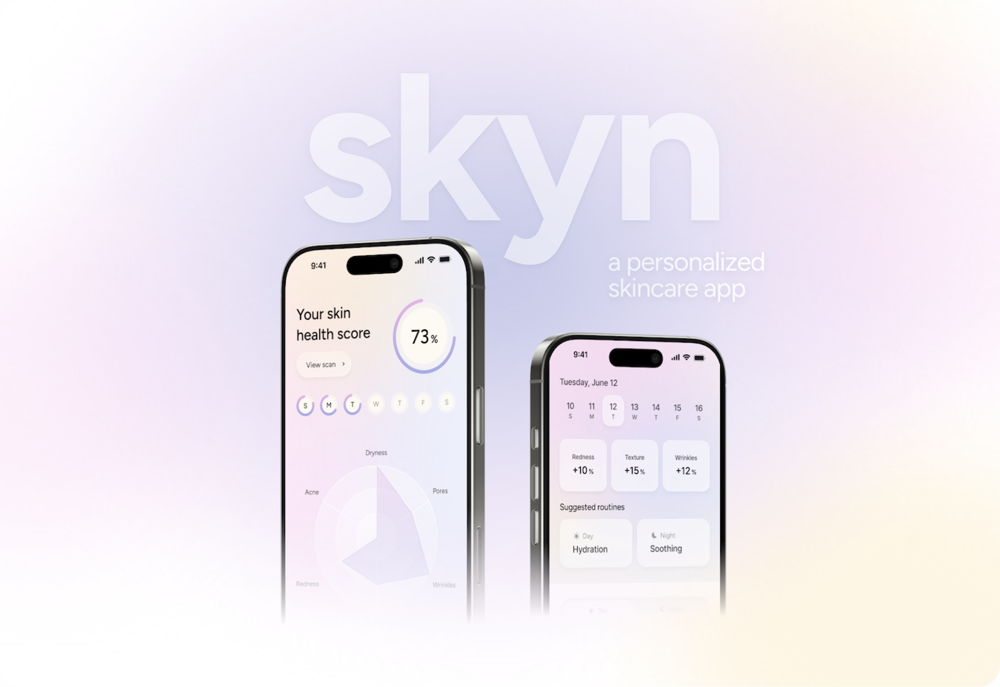
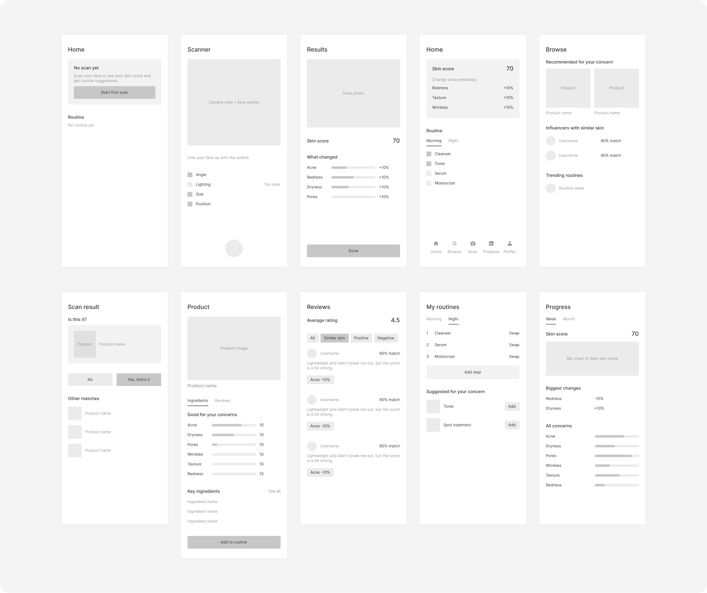
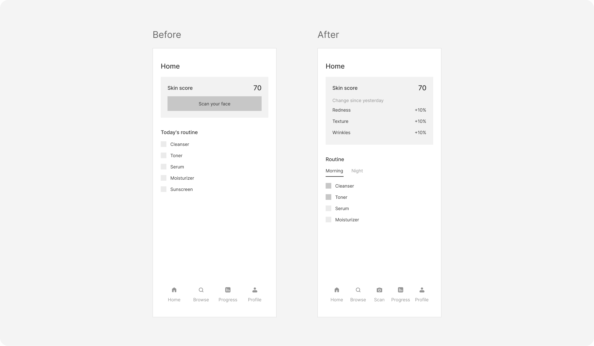
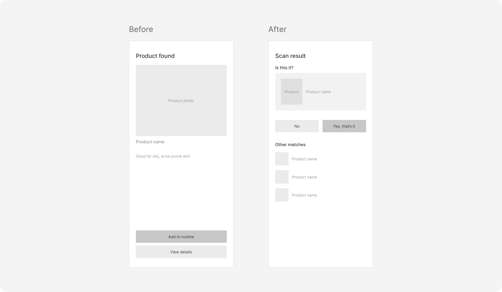
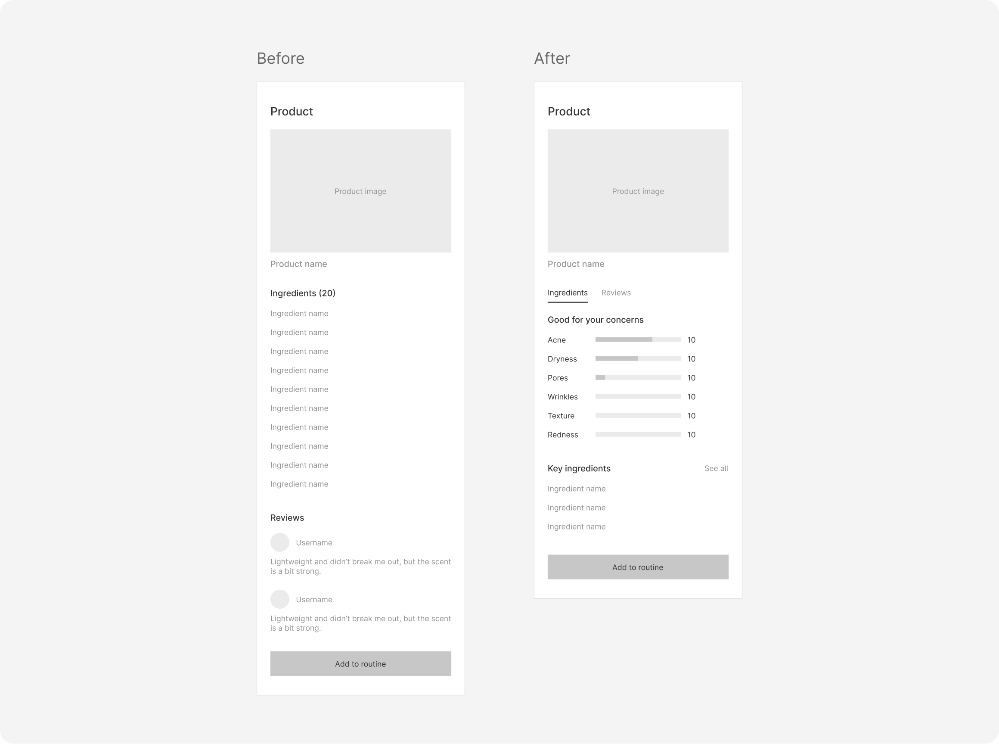
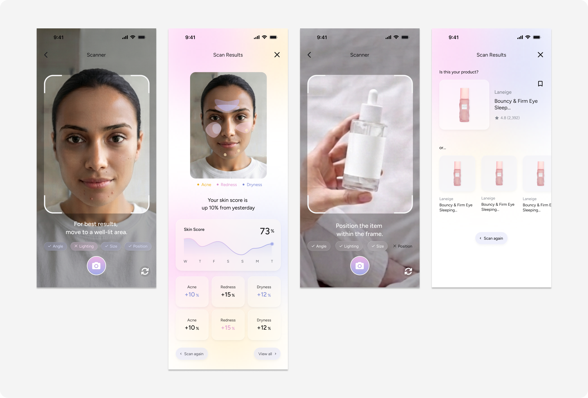

Problem
Too many options
Reviews and advice often come from people with different skin types and concerns.
Details
Role: Sole Product Designer
Timeline: Summer 2026 (8 weeks)
Skills: UX Research, Interaction Design, Prototyping
Tools: Figma
Summary
skyn is a personalized skincare app that uses AI-powered skin analysis to help users find the right products, build daily routines, and track changes in their skin over time.

Overview
Problem
Over two years working in the beauty industry, I noticed a recurring problem in consumer research and in conversations with people around me.
Solution
skyn connects personalized product recommendations, daily routines and progress tracking, so every decision has context.
Problem
Reviews and advice often come from people with different skin types and concerns.
Solution
Users discover products based on their skin profile and build morning and night routines.
Problem
Results are gradual and easy to forget, which makes it hard to judge a routine.
Solution
Saved skin scans let users review changes over time and see whether a routine is helping.
Research
Desk research
Interest in skincare apps is growing…
~2,000%
Search interest in skincare apps increased by nearly 2,000% over the past five years.
Source: Google Trends
$227.1B
The global skincare market is expected to grow from $122.1 billion in 2025 to $227.1 billion by 2034, with an annual growth rate of 7.3%.
Source: Fortune Business Insights
…but existing apps lack personalization.
Existing app
What it does
Scans a product and scores its ingredients by health risk.
Limitation
The score is the same for everyone, so it can’t tell you whether a product suits your skin.
Existing app
What it does
Builds routines and recommends products from a skin quiz, with a diary for tracking.
Limitation
It knows your skin only through quiz answers, and progress depends on what you log.
Opportunity
What it does
Scans your actual skin, recommends products for it and builds them into routines.
How it’s different
Saved scans show how your skin changes over time, so results don’t rely on memory.
Interviews
I then interviewed eight participants about three areas:
01
What information do people rely on, and how do they decide whether a product suits their skin?
02
How do people build their routines, and what leads them to add or replace a product?
03
How do people notice changes in their skin and decide whether their skincare is working?
In participants’ own words:
“I’ll see a product everywhere and want to try it, but I don’t really know if it’ll work for my skin.”
“I spend a lot of time reading reviews, but it’s hard to know which ones to trust when everyone’s skin is so different.”
“Sometimes I think my skin’s getting better, but I can’t really remember what it looked like a month ago.”
Key insights
01
More options and recommendations didn’t make choosing easier. Participants needed a way to judge how relevant information was to their skin type and concerns.
02
Without a consistent record, it was hard to compare current skin with earlier conditions and tell whether a routine was helping.
Users
I identified two groups based on skincare knowledge, confidence and habits.
Limited skincare knowledge and less confident choosing products. More likely to follow trends and rarely track progress. They need help getting started, understanding their options and building a routine.
Comfortable researching products and making decisions, and some already track their skin. They still value personalized recommendations and need support comparing options and refining established routines.
Opportunity
Process
Information architecture
Before wireframing, I mapped how the main areas connect. Scanning sits at the center of the nav, and product pages are shared, so users reach the same details anywhere.
Home
Scan
Browse
Progress
Profile
Wireframes
I laid out the main flows in mid-fidelity wireframes: scanning, product lookup, discovery, routines and progress. Keeping them grayscale kept the focus on structure, hierarchy and how each screen leads to the next.

User testing
I tested an earlier version with 5 participants, asking them to scan their skin, look up a product and set up a routine. Three friction points each led to a change.
What wasn’t working
Testers looked for Scan in the nav bar and missed the button inside the score card. A single score didn’t show what changed, and morning and night products shared one routine.
What changed
Scan moved into the nav bar. The score now shows each concern’s change since yesterday, and the routine is split into Morning and Night tabs.

What wasn’t working
When the scan matched the wrong product, there was no way to correct it, so the wrong product could end up in a routine.
What changed
The result now asks “Is this it?” with No and Yes, and shows other likely matches to pick from.

What wasn’t working
The full ingredient list was overwhelming and didn’t answer whether the product suits the user’s skin. Reviews from anyone didn’t feel relevant.
What changed
Ingredients are summarized by skin concern with a short key-ingredients list, and reviews moved to their own screen with a Similar skin filter.

Final design
01
Understand your starting point and explore the products you use.
The skin scan summarizes concerns like redness, dryness and texture into a score users can save and compare.
The product scanner looks up a product and shows how it relates to the user’s skin profile before they add it to a routine.

02
Organize recommendations into a routine you can follow.
Users build separate day and night routines, then add, remove or reorder products as their skin and needs change.
Suggested routines give beginners a starting point, and anyone can edit them to fit the products they already own.
03
Review changes without relying on memory alone.
The progress view brings saved scans and each concern’s history together, showing what improved or needs attention.
It’s meant to help users notice patterns over time, not to claim that any one product caused a specific change.
04
Find recommendations from people with similar skin.
Users browse products, creators and routines by skin type, and creator profiles show why a recommendation fits.
From there, users can try recommended products, compare alternatives or adapt a shared routine to fit their own skin.
05
Understand the details behind a recommendation.
Product pages combine ingredient information with reviews from users with similar skin. Reviews are split into positive, negative and concern-specific feedback, so they’re easier to compare.
Ingredient pages explain what each ingredient does and how it relates to different skin concerns, like acne or dryness. They also list popular products that include that ingredient.
Reflection
I had so much fun with this passion project, stepping outside my comfort zone and getting to be more experimental with the interface design! For a lot of people (including myself), skincare is a form of healing and self-care, not just about finding the right products, and I wanted skyn to reflect that experience. I enjoyed experimenting with glass effects, soft colors, gradients and transparency to develop a design system that captured this feeling while still keeping the interface simple and intuitive.
It was also rewarding to draw from my experience working in the beauty industry and turn problems I’d noticed into something tangible. Since skincare is something so many people around me engage with, I especially enjoyed having deeper conversations with them about their experiences and frustrations during the research process. One thing I learned was that even though I came into the project with some knowledge of the industry, I couldn’t assume I understood everyone’s needs. Hearing their different perspectives and seeing where they struggled during testing helped me challenge my initial assumptions and make more thoughtful design decisions.